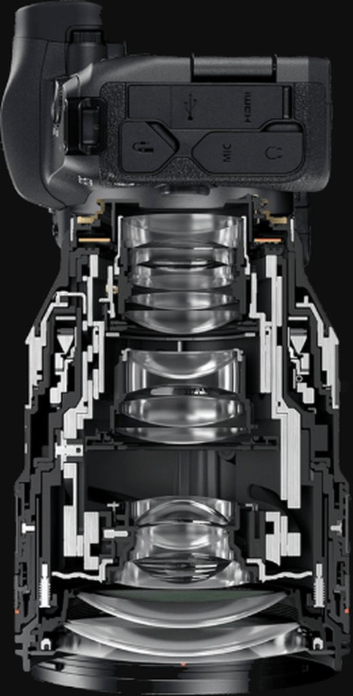
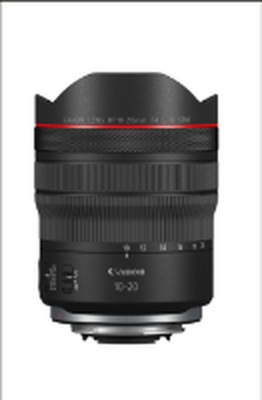
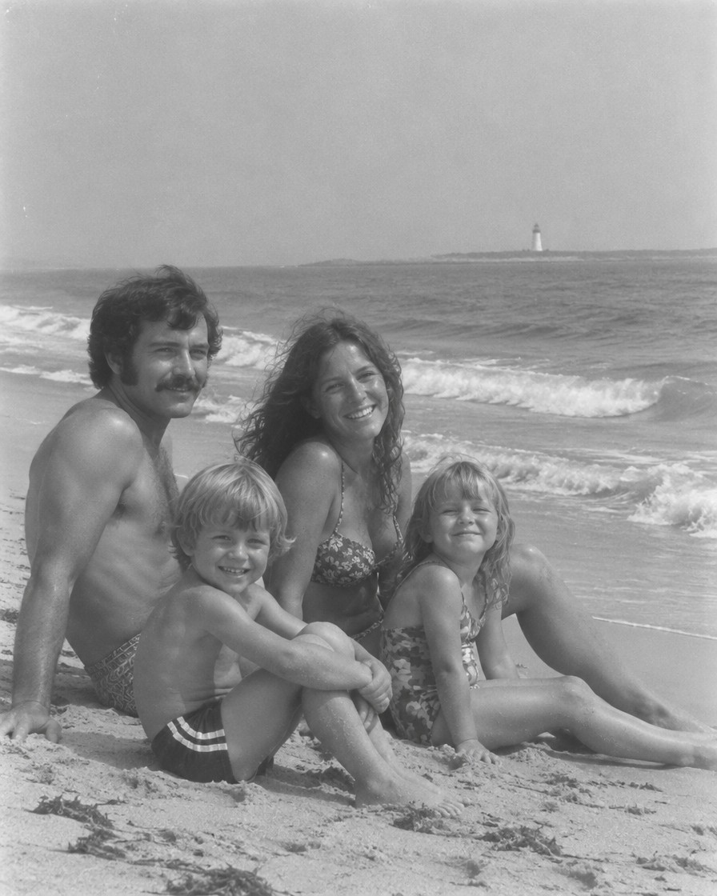
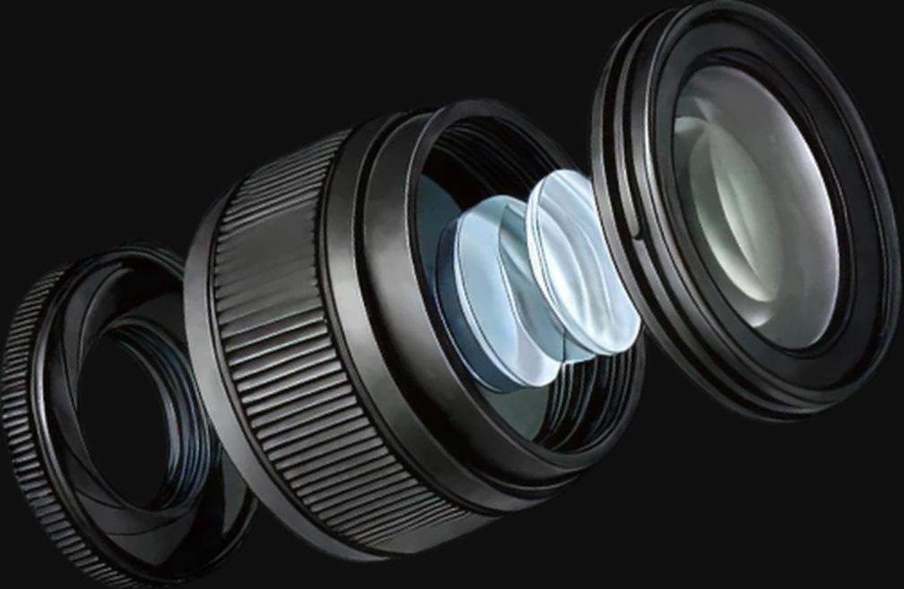
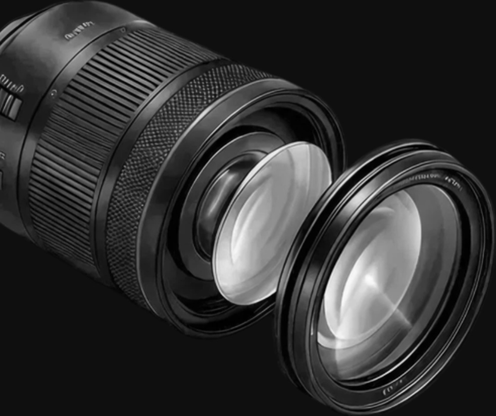
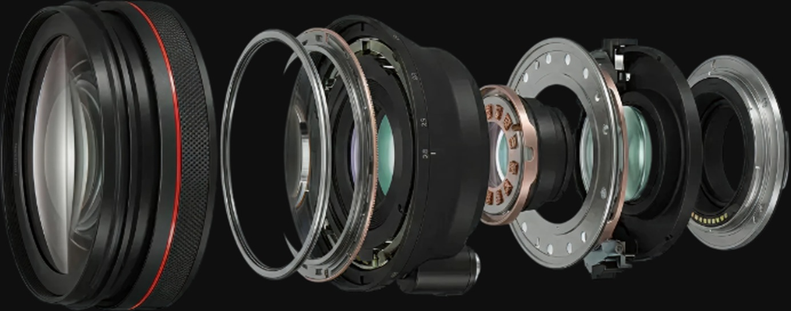

High-definition images
beyond imagination
Large-diameter mount
x short flange back
This enabled the development of the RF28-70mm F2 L USM zoom lens
with a maximum aperture of F2, which was difficult to produce in the EF mount,
and the RF50mm F1.2 L USM lens, which provides high sharpness when shooting at maximum aperture.
RF 마운트는 EF 마운트의 넓은 54mm 구경을 채용하면서 동시에 카메라의 소형 설계가 가능하도록 합니다.
광학 설계의 유연성을 향상시켜 CMOS 센서와 렌즈 후면을 가까이 배치했습니다.


A new mount
communication system
that enhances camera
and lens connectivity.
The electronic contacts in the mount connection, which consist of 8 pins in the EF mount,
have been increased to 12 pins in the RF mount, significantly improving the
communication speed between the lens and the camera.
(새로운 마운트 통신 시스템) 이를 통해 카메라와 렌즈 간의 통신이 더욱 향상되어,
조작성 개선과 표현력 상승 뿐만 아니라 손떨림 보정 성능까지 크게 개선됐습니다.
High-definition images
beyond imagination
Large-diameter mount x short
flange back
The electronic contacts in the mount connection, which consist of 8 pins in the EF mount,
have been increased to 12 pins in the RF mount, significantly improving the
communication speed between the lens and the camera.

Control Ring
for more
comfortable operation조리개, 셔터 스피드, ISO 감도, 노출 보정 등을 사용자가 원하는 대로
커스터마이즈 설정을 할 수 있는 컨트롤 링을 도입했습니다.
이제 각자의 스타일을 고려한 설정으로 촬영 할 수 있습니다.In-camera digital lens optimization
Immediate optical correction
after shooting‘디지털 렌즈 최적화’는 렌즈마다 존재하는 수차와 회절현상을 보정하여
이미지 본래의 해상도로 복원시키는 기능입니다.
촬영 중에 수차 및 회절현상 보정을 처리할 수 있도록 합니다.Dual Sensing IS/Combination IS
Precise shake correction possible
with new mount communication system정지 이미지 (사진) 촬영 시, 렌즈 센서와 카메라의 CMOS 센서에서
얻은 이미지 정보로부터 흔들림을 감지하면 강력한 손떨림 보정을 위해 ‘듀얼 센싱 IS’가 작동합니다.
렌즈의 IS로는 감지하지 못한 흔들림을 높은 정밀도로 감지하여 최대 5스톱의 손떨림을 보정합니다.